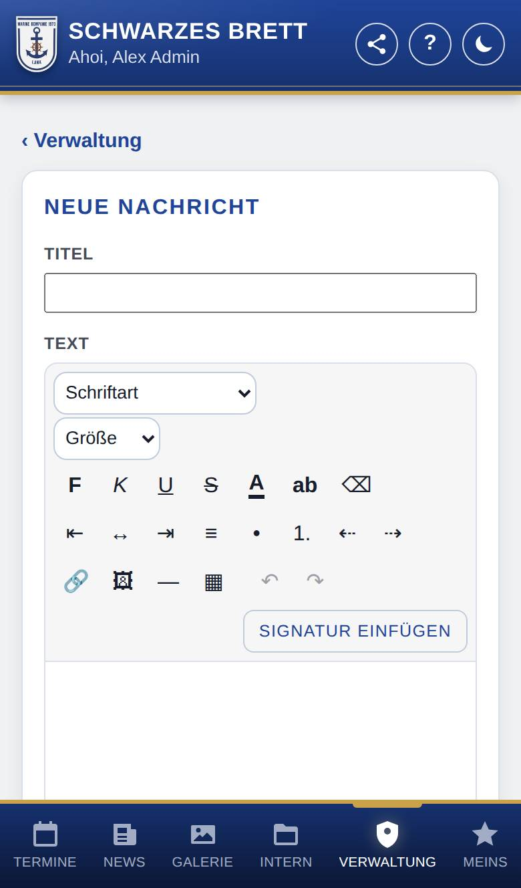
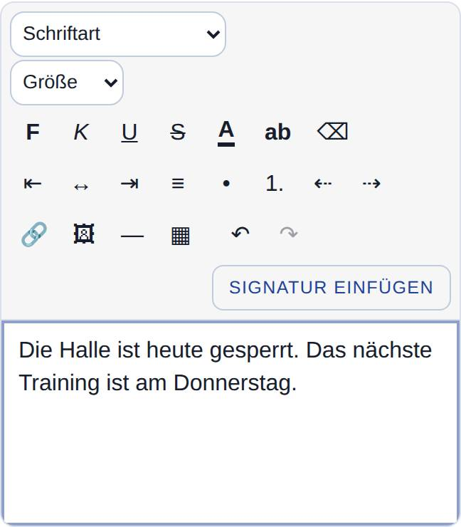
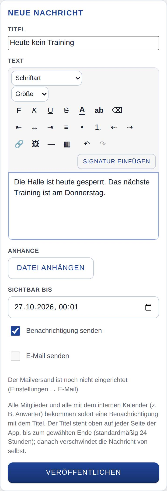
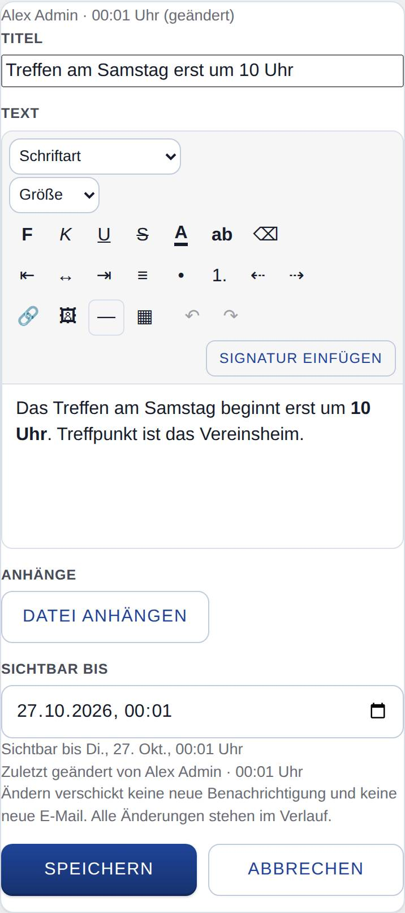
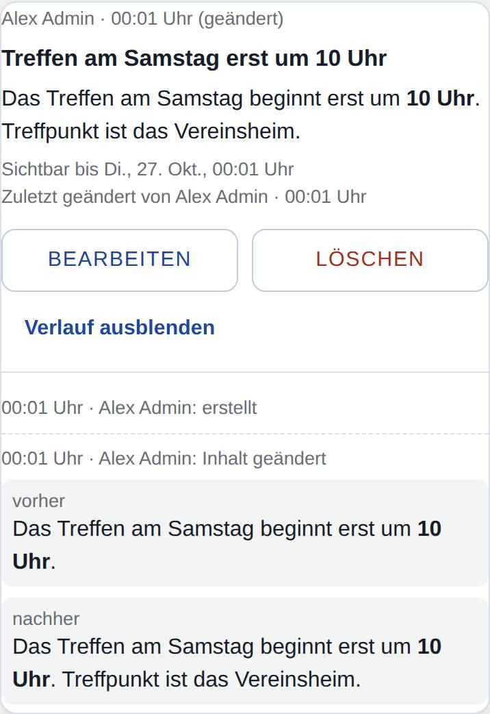

Ans Schwarzes Brett schreiben
Nur, wenn Schwarzes Brett eingeschaltet ist.
Hier schreibst du eine dringende Nachricht ans Schwarzes Brett, z. B. „Training fällt heute aus“. Ihr Titel steht als Banner oben auf jeder Seite der App, so lange du willst (anfangs 24 Stunden). Den Text gestaltest du wie in einem Mailprogramm, auf Wunsch mit deiner Signatur und mit Dateien im Anhang. Außerdem änderst oder löschst du hier Nachrichten und siehst, wer was geändert hat.

So öffnest du die Seite
Tippe unten auf Verwaltung und dann auf Schwarzes Brett. Ist das deine einzige Aufgabe in der Verwaltung, öffnet Verwaltung gleich diese Seite. Steht schon eine Nachricht am Brett, führt auch Brett öffnen und bearbeiten im Banner hierher.
Was du hier siehst
- ‹ Verwaltung: zurück zur Startseite der Verwaltung (nur, wenn du dort mehrere Aufgaben hast).
- Neue Nachricht: die Felder Titel und Text, darüber die Werkzeugleiste zum Gestalten, Anhänge mit Datei anhängen, das Feld Sichtbar bis, die Haken Benachrichtigung senden und E-Mail senden und der Knopf Veröffentlichen.
- Aktuelle Nachrichten: alle Nachrichten, die gerade stehen, mit Sichtbar bis, Bearbeiten, Löschen und Verlauf. Darunter steht, wer die Nachricht zuletzt wann geändert hat und wie weit der Mailversand ist.
- Verlauf: abgelaufene und gelöschte Nachrichten: Nachrichten der letzten 30 Tage, die abgelaufen sind oder jemand gelöscht hat, mit ihrem Verlauf.
- Laufende Umfragen: wie bei allen Mitgliedn, wenn die Marinekompanie Lank Umfragen nutzt; darunter Beendete Umfragen und, wenn du Umfragen verwalten darfst, Umfragen verwalten.
Die Werkzeugleiste
Mit der Leiste über dem Text gestaltest du die Nachricht wie in einem Mailprogramm. Markiere zuerst den Text, den du ändern willst.

- Schriftart und Größe: Auswahl oben links.
- F, K, U, S: fett, kursiv, unterstrichen, durchgestrichen.
- A und ab: Textfarbe und Hintergrundfarbe (zum Markieren). Ein Tipp öffnet die Farbauswahl.
- ⌫: Formatierung des markierten Texts entfernen.
- ⇤ ↔ ⇥ ≡: linksbündig, zentriert, rechtsbündig, Blocksatz.
- • und 1.: Aufzählung und nummerierte Liste.
- ⇠ und ⇢: Einzug verkleinern und vergrößern. In einer Liste rückt das den Punkt ein bzw. aus.
- 🔗: Link. Erlaubt sind Adressen mit https://, E-Mail-Adressen und Telefonnummern.
- 🖼: Bild einfügen (JPG, PNG oder WebP). Bilder kannst du auch hineinziehen oder einfügen. Die Größe änderst du an den Ecken des Bilds.
- ―: Trennlinie.
- ▦: Tabelle einfügen. Steht der Cursor in einer Tabelle, erscheinen Knöpfe für Zeilen und Spalten.
- ↶ und ↷: rückgängig und wiederholen.
- Signatur einfügen: setzt deine Signatur ans Ende. Hast du noch keine, steht dort Noch keine Signatur – jetzt einrichten.
So gehst du vor
Eine Nachricht veröffentlichen
- Gib unter Neue Nachricht einen Titel ein. Er steht im Banner, in der Benachrichtigung und als Betreff der Mail.
- Schreibe darunter den Text und gestalte ihn mit der Werkzeugleiste.
- Willst du Dateien mitschicken, tippe unter Anhänge auf Datei anhängen und wähle eine oder mehrere Dateien. Erlaubt ist jede Art von Datei; mit × nimmst du eine wieder heraus.
- Wähle bei Sichtbar bis, bis wann die Nachricht stehen soll. Vorgegeben sind 24 Stunden ab jetzt.
- Lass den Haken bei Benachrichtigung senden, wenn alle sofort Bescheid bekommen sollen.
- Lass den Haken bei E-Mail senden, wenn alle die Nachricht auch per Mail bekommen sollen. Dahinter steht, an wie viele.
- Tippe auf Veröffentlichen.
- Prüfe in der Nachfrage Titel, Ende, Versandwege und Anhänge und bestätige. Die Nachricht steht sofort am Brett.

Deine Signatur einfügen
- Tippe beim Schreiben auf Signatur einfügen. Sie steht dann am Ende des Texts.
- Du kannst sie danach wie den übrigen Text ändern; deine gespeicherte Signatur bleibt davon unberührt.
Hast du noch keine Signatur, tippe auf Noch keine Signatur – jetzt einrichten. Die App öffnet die Signatur in deinem Konto. Was du schon geschrieben hast, bleibt erhalten: Nach dem Speichern der Signatur führt ‹ Zurück zur Nachricht wieder hierher. Wie du die Signatur einrichtest, steht auf der Seite Signatur.
Text aus Word oder Outlook übernehmen
- Markiere den Text in Word oder Outlook und kopiere ihn.
- Füge ihn in das Feld Text ein.
Schrift, Farben, Aufzählungen und Tabellen kommen mit. Bilder übernimmt die App, wo es geht. Klappt das bei einem Bild nicht, sagt sie dir Bescheid; füge es dann einzeln über 🖼 ein.
Eine Nachricht ändern
- Tippe bei der Nachricht auf Bearbeiten.
- Ändere Titel, Text, Anhänge oder Sichtbar bis. Das Ende kannst du verlängern oder verkürzen; Anhänge kannst du dazunehmen oder mit × entfernen.
- Tippe auf Speichern. Mit Abbrechen bleibt alles, wie es war.

Nachsehen, wer was geändert hat
- Tippe bei der Nachricht auf Verlauf.
- Du siehst jede Änderung mit Zeit und Namen. Bei Titel, Text, Anhängen und Ende stehen der alte und der neue Stand nebeneinander (vorher, nachher).
- Unter Mailversand je Empfänger siehst du, an wen die Mail ging und ob es geklappt hat.

Eine Nachricht löschen
- Tippe bei der Nachricht auf Löschen.
- Bestätige die Nachfrage. Die Nachricht verschwindet sofort vom Brett. Noch nicht verschickte Mails gehen nicht mehr raus.
Unter Verlauf: abgelaufene und gelöschte Nachrichten steht sie noch 30 Tage, mit Namen und Zeitpunkt des Löschens.
Gut zu wissen
- Mit Benachrichtigung senden bekommen alle Mitglied und Personen mit dem internen Kalender (z. B. Anwärter) eine Benachrichtigung mit dem Titel, außer dir selbst. Das gilt für alle, die die Art Schwarzes Brett: dringende Nachrichten auf ihrem Gerät eingeschaltet haben.
- E-Mail senden gibt es, wenn ein Admin den Mailversand eingerichtet hat. Die Mail geht an alle Mitglied und Personen mit dem internen Kalender, für die eine Mailadresse hinterlegt ist und die Mails vom Brett nicht abgeschaltet haben, auch an dich selbst. So siehst du, wie die Mail ankommt. Jede Person bekommt ihre eigene Mail; die Adressen der anderen sieht niemand.
- Anhänge sehen und laden alle herunter, die die Nachricht sehen. Mit E-Mail senden hängen sie auch an der Mail. Eine Datei darf höchstens 20 MB groß sein (bei manchen Servern weniger; die App sagt es dann).
- Ist die Mail mit ihren Bildern und Anhängen größer, als der Mailserver annimmt, sagt die App das vor dem Veröffentlichen. Verkleinere dann Bilder oder Anhänge oder nimm den Haken E-Mail senden weg.
- Ändern verschickt keine neue Benachrichtigung und keine neue Mail. Ändern sich Titel oder Text, sehen auch die die Nachricht wieder im Banner, die sie ausgeblendet hatten. Ändert sich nur das Ende, bleibt sie ausgeblendet.
- Ändern und löschen darf jede und jeder mit diesem Recht, nicht nur, wer die Nachricht geschrieben hat. Den Verlauf sehen nur Personen mit diesem Recht.
- Eine Längengrenze für Titel und Text gibt es nicht. Sehr lange Titel kürzt das Banner, gespeichert wird alles. Grenzen setzt nur der Server, z. B. bei sehr großen Bildern; die App sagt dir dann, welche.
- Nimm das Schwarzes Brett für Dringendes.